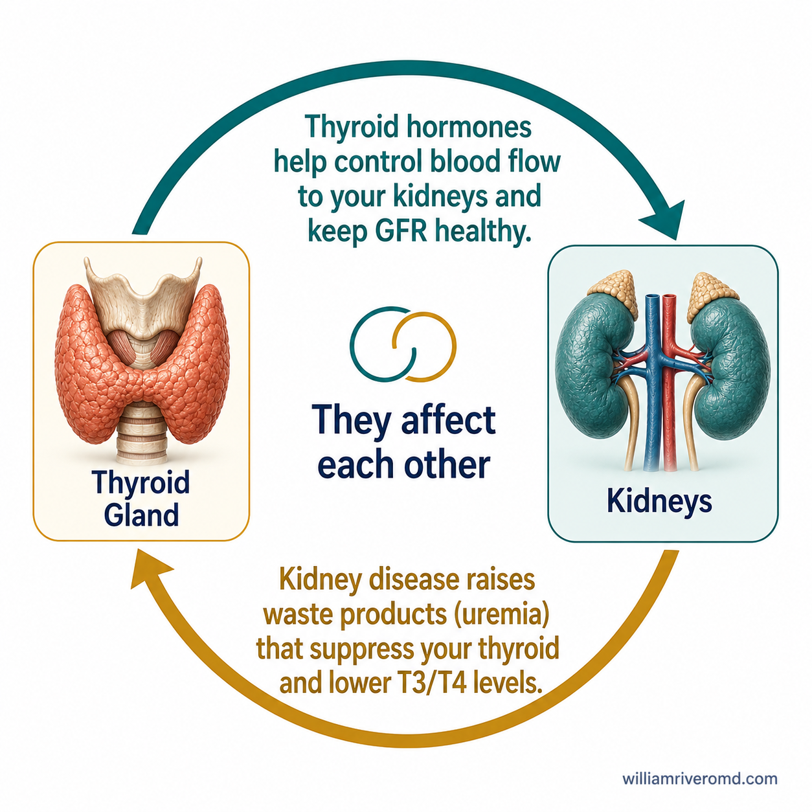
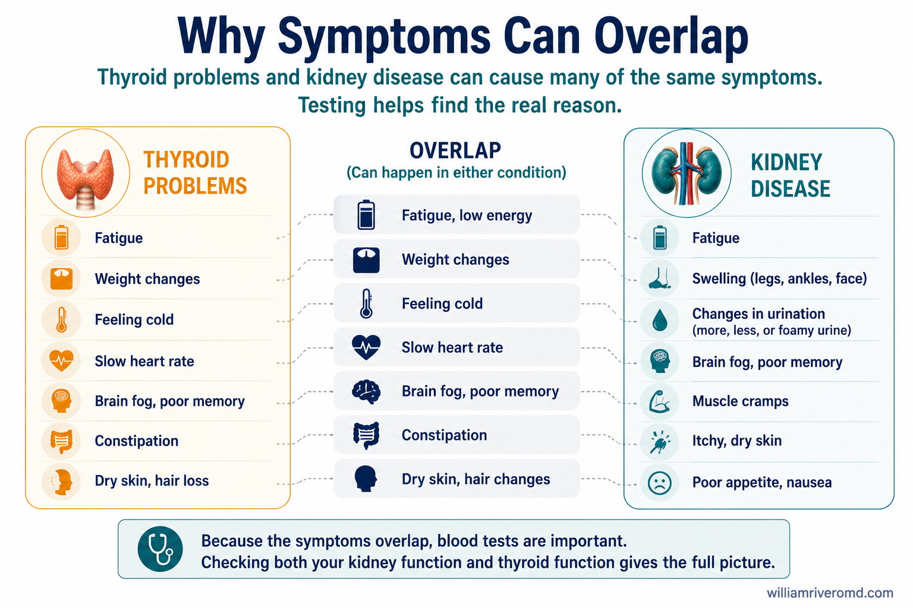

What Does the Thyroid Do?Ano ang Ginagawa ng Thyroid?Unsa ang Gibuhat sa Thyroid?Nanu ing Ginagawa ning Thyroid?
The thyroid is a small, butterfly-shaped gland at the front of your neck. It makes two main hormones — T3 (triiodothyronine) and T4 (thyroxine) — that control how every cell in your body uses energy.Ang thyroid ay isang maliit na glandula sa harap ng iyong leeg na may hugis na paruparo. Gumagawa ito ng dalawang pangunahing hormone — T3 at T4 — na kumokontrol sa paggamit ng enerhiya ng bawat selula sa iyong katawan.Ang thyroid usa ka gamay nga glandula sa atubangan sa imong liog nga porma sa alibangbang. Nagbuhat kini og duha ka nag-unang hormone — T3 ug T4 — nga nagkontrol sa paggamit og enerhiya sa matag selula sa imong lawas.Ing thyroid metung yang malapit na glandula king atubangan ning leeg mu a may aniang paruparu. Gumagawa ya ning darua ka pangunahing hormone — T3 at T4 — a kumokontrol king paggamit ning enerhiya ning balang selula king katawan mu.
❤️ Heart RateTibok ng PusoRitmo sa KasingkasingTibok ning Puso
Thyroid hormones keep your heart beating at a normal rate and rhythm.Pinapanatili ng mga hormone ng thyroid ang normal na tibok ng puso.Gikontrol sa thyroid hormone ang normal nga tibok sa kasingkasing.Pinapanatili ning mga hormone ning thyroid ing normal na tibok ning puso.
🌡️ Body TemperatureTemperatura ng KatawanTemperatura sa LawasTemperatura ning Katawan
They regulate how your body produces heat and stays warm.Kinokontrol nila kung paano gumagawa ng init ang iyong katawan.Gikontrol nila kung unsaon paghimo og kainit sa imong lawas.Kinokontrol da kung papanung gumagawa ning init ing katawan mu.
⚡ MetabolismMetabolismoMetabolismoMetabolismo
They control how fast or slow your body burns calories and uses nutrients.Kinokontrol nila kung gaano kabilis o kababaw ng katapusin ng iyong katawan ang mga kalaría.Gikontrol nila kung unsa kabilis o kahinay ang pagsunog og kalori sa imong lawas.Kinokontrol da kung ganung kabilis o kabagal sumunog ning calorie ing katawan mu.
A healthy thyroid also helps your kidneys receive the right amount of blood flow to filter waste properly. When the thyroid works too slowly (hypothyroidism), almost every organ in your body slows down — including your kidneys.Ang malusog na thyroid ay tumutulong din sa mga bato na makatanggap ng tamang dami ng daloy ng dugo upang ma-filter nang tama ang basura. Kapag ang thyroid ay gumagana nang masyadong mabagal (hypothyroidism), halos bawat organ sa iyong katawan ay bumabagal — kasama na ang mga bato.Ang himsog nga thyroid nagtabang usab sa mga bato nga makadawat og hustong kantidad sa dugo aron matukod ang basura. Kung ang thyroid nagtrabaho og mahinay (hypothyroidism), halos ang matag organ sa imong lawas mahinay — lakip ang mga bato.Ing masalud na thyroid tumutulong naman king mga batu a makatanggap ning tamang dami ning daloy ning dugo para ma-filter ning tama ing basura. Kapag ing thyroid gumagana ng mabagal (hypothyroidism), halos balang organ king katawan mu mabagal — kasama na ing mga batu.
How CKD Affects Your ThyroidPaano Nakakaapekto ang CKD sa Iyong ThyroidUnsaon Pakaapekto sa CKD sa Imong ThyroidPapanung Nakakaapekto ing CKD king Thyroid Mu
CKD affects the thyroid in several ways. As kidney function declines, waste products build up in the blood — a state called uremia. Uremia suppresses the thyroid gland and reduces the body's ability to convert T4 into the active form T3. The kidneys also retain too much iodine in CKD, which can slow hormone production further.Nakakaapekto ang CKD sa thyroid sa maraming paraan. Habang bumababa ang paggana ng bato, nag-iipon ang mga basura sa dugo — isang kondisyong tinatawag na uremia. Pinipigilan ng uremia ang thyroid gland at binabawasan ang kakayahan ng katawan na gawing T3 ang T4. Nananatili rin ang masyadong maraming yodo sa mga bato sa CKD, na maaaring magpabagal ng produksyon ng hormone.Nakaapekto ang CKD sa thyroid sa daghang paagi. Samtang mokunhod ang function sa bato, nag-ipon ang mga basura sa dugo — usa ka kondisyon nga gitawag uremia. Gipugngan sa uremia ang thyroid gland ug gipakunhod ang abilidad sa lawas nga himoong T3 ang T4. Nagpabilin usab ang sobrang yodo sa mga bato sa CKD, nga makapahinay pa sa produksyon sa hormone.Nakakaapekto ing CKD king thyroid king daramihang paraan. Habang bumababa ing paggana ning batu, nag-iipon ing mga basura king dugo — metung a kondisyon a tinatawag na uremia. Pinipigilan ning uremia ing thyroid gland at binabawasan ing kakayahan ning katawan na gawing T3 ing T4. Nananatili naman ing masyadong daming yodo king mga batu king CKD, a makapagpabagal pa ning produksyon ning hormone.

Key fact about low T3Mahalagang katotohanan tungkol sa mababang T3Importanteng kamatuoran bahin sa ubos nga T3Mahalagang katotohanan tungkol king mababang T3
Most dialysis patients have low T3 levels — but this does not mean they have hypothyroidism that needs treatment. Low T3 in CKD is caused by kidney disease itself and is called "euthyroid sick syndrome." Your doctor looks at your TSH and Free T4 to decide if thyroid treatment is needed — not T3 alone.Karamihan sa mga pasyenteng nasa dialysis ay may mababang antas ng T3 — ngunit hindi ito nangangahulugang may hypothyroidism sila na nangangailangan ng paggamot. Ang mababang T3 sa CKD ay sanhi ng sakit sa bato mismo. Tinitingnan ng iyong doktor ang TSH at Free T4 upang magpasiya — hindi lang ang T3.Kadaghanan sa mga pasyente sa dialysis nay ubos nga T3 — apan kini dili magpasabot nga nay hypothyroidism sila nga nanginahanglan og pagtambal. Ang ubos nga T3 sa CKD tungod sa sakit sa bato mismo. Gitan-aw sa imong doktor ang TSH ug Free T4 aron madesisyunan — dili lang ang T3.Karamihan sa mga pasyenteng nasa dialysis nay mababang antas ning T3 — ngunit hindi ya ito nangangahulugang nay hypothyroidism da a kailangan ning paggamot. Ing mababang T3 king CKD sanhi ning sakit king batu mismo. Tinitingnan ning doktor mu ing TSH at Free T4 para magpasiya — hindi lang ing T3.
Symptoms — Many Overlap With CKDSintomas — Maraming Magkakatulad sa CKDSintomas — Daghang Magkapareha sa CKDSintomas — Daming Magkakatulad king CKD
Hypothyroidism and CKD share many symptoms. This overlap is why your doctor may check your thyroid even if your main diagnosis is kidney disease. Treating an underactive thyroid can sometimes improve how you feel significantly.Maraming sintomas na magkakatulad ang hypothyroidism at CKD. Dahil dito, maaaring suriin ng iyong doktor ang iyong thyroid kahit ang pangunahing diagnosis mo ay sakit sa bato. Ang paggamot sa mahinang thyroid ay maaaring mapabuti ang iyong pakiramdam nang malaki.Daghang magkakatulad nga sintomas ang hypothyroidism ug CKD. Mao kini ang hinungdan ngano nga tan-awon sa imong doktor ang imong thyroid bisan ang imong pangunahing diagnosis sakit sa bato. Ang pagtambal sa dili aktibo nga thyroid usahay makapaayo sa imong pagbati pag-ayo.Daming magkakatulad a sintomas ing hypothyroidism at CKD. Ito ing dahilan at sususurin ning doktor mu ing thyroid mu kahit ing pangunahing diagnosis mu sakit king batu. Ing paggamot king mahinang thyroid maaaring mapabuti ing pakiramdam mu ng malaki.

Common symptoms to discuss with your doctorMga karaniwang sintomas na dapat talakayin sa iyong doktorKasagarang sintomas nga hisgutan sa imong doktorMga karaniwang sintomas a dapat talakayin king doktor mu
- Fatigue or very low energy that doesn't improve with dialysisPagod o napakababang lakas na hindi bumubuti sa dialysisPagod o gamay kaayo nga enerhiya nga dili moayo sa dialysisPagod o mababang lakas a hindi bumubuti king dialysis
- Swelling in your legs, ankles, or facePamamaga ng mga binti, bukung-bukong, o mukhaPamaga sa imong mga bitiis, bukton-bukton, o nawongPamamaga ning mga binti, bukung-bukong, o mukha
- Feeling cold even in warm weatherPag-aalamihin kahit mainit ang panahonPaglamig bisan mainit ang klimaPag-alamig kahit mainit ing panahon
- Constipation (hard, infrequent bowel movements)Constipation (matigas, bihirang pagdumi)Constipation (gahi, panagsa nga pag-lug)Constipation (matigas, bihirang pagdumi)
- Brain fog — trouble concentrating or rememberingBrain fog — hirap mag-concentrate o mag-alalaBrain fog — lisud mag-concentrate o mahinumdumanBrain fog — hirap mag-concentrate o mag-alala
- Dry skin, hair thinning or lossTuyong balat, pagpapayat o paglagas ng buhokUga nga panit, pagmangitngit o paghulog sa buhokTuyung balat, pagpapayat o paghulog ning buhok
- Unexplained weight gainPagtaas ng timbang nang walang dahilanPagdugang sa timbang nga wala'y hinungdanPagtaas ning timbang ng walang dahilan
- Slow heartbeat or low blood pressureMabagal na tibok ng puso o mababang presyon ng dugoHinay nga tibok sa kasingkasing o ubos nga presyon sa dugoMabagal na tibok ning puso o mababang presyon ning dugo
- Depression or low mood lasting more than 2 weeksDepresyon o mababang mood nang higit sa 2 linggoDepresyon o ubos nga mood labaw sa 2 semanaDepresyon o mababang mood nang mahigit 2 linggu
When to ask for a thyroid test (TSH)Kailan hihilingin ang thyroid test (TSH)Kanus-a mangayo og thyroid test (TSH)Kailan hihilingin ing thyroid test (TSH)
- You have CKD and have never had a TSH testMayroon kang CKD at hindi pa naka-TSH testNay CKD ka ug wala pa ka'y TSH testNay CKD ka at hindi ka pa naka-TSH test
- You notice several symptoms from the list aboveNapansin mo ang ilang sintomas mula sa listahan sa itaasNapansin mo ang pipila sa mga sintomas sa ibabawNapasin mu ing pigilan a sintomas king listahan sa babaye
- You start a new medicine after transplant (tacrolimus, sirolimus)Nagsimula kang uminom ng bagong gamot pagkatapos ng transplantNagsugod ka og bag-ong tambal human sa transplantNagsimula kang uminom ning bagong gamot pagkatapos ning transplant
- Your energy or mood worsens without another explanationLumalala ang iyong lakas o mood nang walang ibang paliwanagMoluya ang imong enerhiya o mood nga wala'y laing pagpasabutLumala ing lakas o mood mu ng walang ibang paliwanag
Thyroid Medicine and Your Kidney MedicinesGamot sa Thyroid at Iyong mga Gamot sa BatoTambal sa Thyroid ug Imong mga Tambal sa BatoGamot king Thyroid at mga Gamot Mu king Batu
Levothyroxine (brand names: Euthyrox, Synthroid, Eltroxin) is the most common thyroid hormone replacement tablet. It must be taken correctly to be absorbed properly — especially in CKD patients who take multiple medicines.Levothyroxine (mga pangalan: Euthyrox, Synthroid, Eltroxin) ang pinaka-karaniwang tablet para sa pagpapalit ng hormone ng thyroid. Dapat itong inumin nang tama para ma-absorb nang maayos — lalo na sa mga pasyenteng may CKD na umiinom ng maraming gamot.Levothyroxine (mga ngalan: Euthyrox, Synthroid, Eltroxin) ang pinaka-kasagaran nga tablet alang sa pagpuli sa thyroid hormone. Kinahanglan kining inomon sa husto aron ma-absorb sa husto — labi na sa mga pasyente nga nay CKD nga nag-inom og daghang tambal.Levothyroxine (mga pangalan: Euthyrox, Synthroid, Eltroxin) ing pinakakaraniwang tablet para king pagpapalit ning hormone ning thyroid. Dapat itong inumin ning tama para ma-absorb ning maayos — lalu na king mga pasyenteng nay CKD a umiinom ning daming gamot.
How to take levothyroxine correctlyPaano inumin nang tama ang levothyroxineUnsaon paginum og tama ang levothyroxinePapanung inumin ning tama ing levothyroxine
- Take it first thing in the morning on an empty stomachInumin ito una sa umaga sa walang laman na tiyanIinon kini una sa buntag sa walay sulod nga tiyanInumin ya una sa umaga king walang laman a tiyan
- Wait 30–60 minutes before eating or drinking anything other than waterMaghintay ng 30–60 minuto bago kumain o uminom ng anumang bagay maliban sa tubigMaghulat 30–60 minuto sa dili pa mokaon o moinom og bisan unsa gawas tubigMaghintay ning 30–60 minuto bago kumain o uminom ning anuman maliban king tubig
- Wait at least 2–4 hours before taking phosphate binders (calcium carbonate, sevelamer)Maghintay ng hindi bababa sa 2–4 oras bago uminom ng mga phosphate binder (calcium carbonate, sevelamer)Maghulat labing menos 2–4 oras sa dili pa moinom og mga phosphate binder (calcium carbonate, sevelamer)Maghintay ning hindi bababa sa 2–4 oras bago uminom ning mga phosphate binder (calcium carbonate, sevelamer)
- Wait 4 hours before iron supplements or multivitamins with ironMaghintay ng 4 oras bago uminom ng iron supplement o multivitamin na may ironMaghulat 4 oras sa dili pa moinom og iron supplement o multivitamin nga nay ironMaghintay ning 4 oras bago uminom ning iron supplement o multivitamin a nay iron
- Do not skip doses — consistency is essential for stable thyroid levelsHuwag lumaktaw ng dosis — ang pagiging tuloy-tuloy ay mahalaga para sa matatag na antas ng thyroidAyaw priso og dosis — ang pagkatuloy-tuloy hinungdanon para sa lig-on nga antas sa thyroidAut lumaktaw ning dosis — ing pagiging tuluy-tuluy mahalaga para king matatag na antas ning thyroid
Thyroid Health on DialysisKalusugan ng Thyroid sa DialysisKahimsog sa Thyroid sa DialysisKalusugan ning Thyroid king Dialysis
Dialysis patients have a higher rate of thyroid problems than the general population — studies show that 1 in 5 hemodialysis patients has hypothyroidism, and two-thirds of those cases are overt (requiring treatment). Women and patients who have been on dialysis longer are at higher risk.Ang mga pasyenteng nasa dialysis ay may mas mataas na rate ng mga problema sa thyroid kaysa sa pangkalahatang populasyon — ipinapakita ng mga pag-aaral na 1 sa 5 na pasyenteng nasa hemodialysis ang may hypothyroidism. Ang mga kababaihan at mga pasyenteng matagal nang nasa dialysis ay may mas mataas na panganib.Ang mga pasyente sa dialysis nay mas taas nga rate sa mga problema sa thyroid kaysa sa kinatibuk-an nga populasyon — nagpakita ang mga pag-aaral nga 1 sa 5 ka pasyente sa hemodialysis nay hypothyroidism. Ang mga babaye ug mga pasyente nga dugay nang naa sa dialysis nay mas taas nga peligro.Ing mga pasyenteng nasa dialysis nay mas mataas na rate ning mga problema king thyroid kaysa king pangkalahatang populasyon — nagpapakita ing mga pag-aaral na 1 sa 5 na pasyenteng nasa hemodialysis ing nay hypothyroidism. Ing mga babai at mga pasyenteng matagal nang nasa dialysis nay mas mataas na panganib.
🔬 Annual TSH CheckTaunang Pagsusuri ng TSHTinuig nga TSH CheckTaunang Pagsuri ning TSH
Ask your dialysis team to check your TSH at least once a year, or sooner if you develop new symptoms.Humingi sa iyong dialysis team na suriin ang iyong TSH nang hindi bababa sa isang beses bawat taon, o mas maaga kung magkaroon ka ng bagong sintomas.Pangayo sa imong dialysis team nga susihon ang imong TSH labing menos kausa sa usa ka tuig, o mas sayo kung mangay ka og bag-ong sintomas.Humingi king dialysis team mu na sususurin ing TSH mu nang hindi bababa sa metung beses bawat taon, o mas aga kung magkaroon ka ning bagong sintomas.
💉 Iodine from Contrast DyesYodo mula sa Contrast DyeYodo gikan sa Contrast DyeYodo galing sa Contrast Dye
X-ray contrast dye used during procedures (like fistula checks) contains large amounts of iodine, which can sometimes trigger thyroid problems. Tell your doctor if you recently had an imaging procedure with contrast.Ang contrast dye na ginagamit sa mga pamamaraan (tulad ng pagsusuri ng fistula) ay naglalaman ng malaking halaga ng yodo, na maaaring magpasimula ng mga problema sa thyroid. Sabihin sa iyong doktor kung kamakailan lang ay sumailalim ka sa imaging procedure na may contrast.Ang contrast dye nga gigamit sa mga pamaagi (sama sa pagsusi sa fistula) nay dagkong kantidad sa yodo, nga usahay makapagsinugdanan og mga problema sa thyroid. Sultihi ang imong doktor kung bag-o lang ka nabuhat og imaging procedure nga nay contrast.Ing contrast dye a ginagamit king mga pamamaraan (tulad ning pagsusuri ning fistula) nay malaking halaga ning yodo, a maaaring makapagpasimula ning mga problema king thyroid. Sabihin king doktor mu kung kamakailan ka lang nakabuhat ning imaging procedure a nay contrast.
Thyroid Health After a Kidney TransplantKalusugan ng Thyroid Pagkatapos ng Kidney TransplantKahimsog sa Thyroid Human sa Kidney TransplantKalusugan ning Thyroid Pagkatapos ning Kidney Transplant
Some medicines used after transplant — particularly tacrolimus and sirolimus (mTOR inhibitors) — can affect thyroid function or unmask a thyroid condition that was hidden before. Your transplant team will monitor your TSH in the first year after transplant.Ang ilang mga gamot na ginagamit pagkatapos ng transplant — lalo na ang tacrolimus at sirolimus — ay maaaring makaapekto sa function ng thyroid o maglantad ng kondisyon ng thyroid na nakatago noon. Susubaybayan ng iyong transplant team ang iyong TSH sa unang taon pagkatapos ng transplant.Ang pipila ka mga tambal nga gigamit human sa transplant — labi na ang tacrolimus ug sirolimus — makaapekto sa function sa thyroid o magpakita og kondisyon sa thyroid nga nagtago kaniadto. Bantayan sa imong transplant team ang imong TSH sa unang tuig human sa transplant.Ang pigilan a gamot a ginagamit pagkatapos ning transplant — lalu na ing tacrolimus at sirolimus — maaaring makaapekto king function ning thyroid o maglantad ning kondisyon ning thyroid a nakatago noon. Susubaybayan ning transplant team mu ing TSH mu king unang taon pagkatapos ning transplant.
If you feel unusually tired or gain weight after transplantKung nakaramdam ka ng hindi pangkaraniwang pagod o tumaba ka pagkatapos ng transplantKung mabati ka og dili kasagaran nga pagod o modako ang imong timbang human sa transplantKung namaramdam ka ning hindi pangkaraniwan a pagod o tumaba ka pagkatapos ning transplant
Ask your transplant team for a thyroid check. Post-transplant hypothyroidism is common and treatable — and getting it treated may improve your energy, mood, and kidney function.Humingi sa iyong transplant team para sa pagsusuri ng thyroid. Ang hypothyroidism pagkatapos ng transplant ay karaniwan at magagamot — at ang paggamot nito ay maaaring mapabuti ang iyong lakas, mood, at function ng bato.Pangayo sa imong transplant team og pagsusi sa thyroid. Ang hypothyroidism human sa transplant kasagaran ug matambalan — ug ang pagtambal niini makapaayo sa imong enerhiya, mood, ug function sa bato.Humingi king transplant team mu para king pagsusuri ning thyroid. Ing hypothyroidism pagkatapos ning transplant karaniwan at maaari itong gamutin — at ing paggamot nito maaaring mapabuti ing lakas, mood, at function ning batu mu.
Tools for PatientsMga Tool para sa mga PasyenteMga Tool alang sa mga PasyenteMga Tool para king mga Pasyente
Tool 1 — Symptom Overlap CheckerTool 1 — Tagasuri ng Magkakatulad na SintomasTool 1 — Pagsusi sa Magkakapareha nga SintomasTool 1 — Tagasuri ning Magkakatulad a Sintomas
Check which of your symptoms overlap with both thyroid disease and CKD. Bring the results to your next appointment.Suriin kung alin sa iyong mga sintomas ang nagkakatulad sa sakit sa thyroid at CKD. Dalhin ang mga resulta sa iyong susunod na appointment.Susiha kung hain sa imong mga sintomas ang nagkakatumbas sa sakit sa thyroid ug CKD. Dad-a ang mga resulta sa imong sunod nga appointment.Susihin kung alin sa mga sintomas mu ing nagkakatulad king sakit king thyroid at CKD. Dalhin ing mga resulta king susunod mung appointment.
Tool 2 — Levothyroxine Timing SchedulerTool 2 — Scheduler ng Oras ng LevothyroxineTool 2 — Scheduler sa Oras sa LevothyroxineTool 2 — Scheduler ning Oras ning Levothyroxine
Enter the time you take levothyroxine and select your other medicines. We'll show you the earliest safe time for each.Ilagay ang oras na inumin mo ang levothyroxine at piliin ang iyong ibang mga gamot. Ipapakita namin ang pinakamaagang ligtas na oras para sa bawat isa.Isulod ang oras nga imong giinum ang levothyroxine ug pilia ang imong ubang mga tambal. Ipakita namo ang pinakaaga nga luwas nga oras alang sa matag usa.Ilagay ing oras a inumin mu ing levothyroxine at piliing ang ibang mga gamot mu. Ipapakita namin ing pinakamaagang ligtas na oras para king bawat isa.
Frequently Asked QuestionsMga Madalas na TanongMga Kasagarang GipangutanaMga Madalas na Tanong
My doctor said my T3 is low. Does that mean I have hypothyroidism?Sinabi ng aking doktor na mababa ang T3 ko. Nangangahulugan ba ito na may hypothyroidism ako?Gisulti sa akong doktor nga ubos ang akong T3. Nagpasabot ba kini nga nay hypothyroidism ako?Sinabi ning doktor ku na mababa ing T3 ko. Nangangahulugan ba ito na nay hypothyroidism ako? +
Not necessarily. Low T3 is extremely common in CKD and dialysis patients — even those with a perfectly normal thyroid. This is called "euthyroid sick syndrome" and is caused by kidney disease itself suppressing T3 production. Your doctor looks at your TSH and Free T4 levels together to decide if treatment is needed, not T3 alone.Hindi naman kinakailangan. Ang mababang T3 ay napaka-karaniwan sa mga pasyenteng may CKD at dialysis — kahit ang mga may ganap na normal na thyroid. Tinatawag itong "euthyroid sick syndrome" at sanhi ito ng sakit sa bato mismo na pumipigil sa produksyon ng T3. Tinitingnan ng iyong doktor ang TSH at Free T4 nang magkasama upang magpasiya kung kailangan ang paggamot — hindi lang ang T3.Dili kinahanglan. Ang ubos nga T3 kasagaran kaayo sa mga pasyente nga nay CKD ug dialysis — bisan ang mga nay hingpit normal nga thyroid. Gitawag kini og "euthyroid sick syndrome" ug tungod sa sakit sa bato mismo nga nagpugngan sa produksyon sa T3. Gitan-aw sa imong doktor ang TSH ug Free T4 magkuban aron madesisyunan kung kinahanglan ang pagtambal — dili lang ang T3.Hindi naman kailangan. Ing mababang T3 karaniwan kaayong sa mga pasyenteng nay CKD at dialysis — kahit ang mga nay ganap na normal a thyroid. Tinatawag ya itong "euthyroid sick syndrome" at sanhi ya ning sakit king batu mismo a pumipigil king produksyon ning T3. Tinitingnan ning doktor mu ing TSH at Free T4 nang magkasama para magpasiya kung kailangan ing paggamot — hindi lang ing T3.
Can treating my thyroid improve my kidney function?Maaari bang mapabuti ng paggamot sa aking thyroid ang function ng aking bato?Makapaayo ba ang pagtambal sa akong thyroid sa function sa akong bato?Maaari bang mapabuti ning paggamot king thyroid ko ing function ning batu ko? +
Sometimes, yes. Hypothyroidism reduces blood flow to the kidneys, which can lower your eGFR (kidney function number). Treating hypothyroidism with levothyroxine can improve eGFR by 5–10 mL/min/1.73m² in some patients. Your doctor will recheck your kidney function (creatinine and eGFR) about 8 weeks after starting or changing your thyroid medicine — because an improvement might even change your CKD stage.Minsan, oo. Ang hypothyroidism ay nagbabawas ng daloy ng dugo sa mga bato, na maaaring magpababa ng iyong eGFR. Ang paggamot ng hypothyroidism ay maaaring magpabuti ng eGFR ng 5–10 mL/min/1.73m² sa ilang pasyente. Muling susuriin ng iyong doktor ang function ng iyong bato pagkalipas ng 8 linggo — dahil ang pagpapabuti ay maaaring magbago pa ng iyong CKD stage.Usahay, oo. Ang hypothyroidism nagpakunhod sa dugo ngadto sa mga bato, nga makapakunhod sa imong eGFR. Ang pagtambal sa hypothyroidism makapaayo sa eGFR sa 5–10 mL/min/1.73m² sa pipila ka pasyente. Susihon pag-usab sa imong doktor ang function sa imong bato human 8 semana — tungod kay ang pagpabuti mahimong magbag-o sa imong CKD stage.Minsan, oo. Ing hypothyroidism nagbabawas ning daloy ning dugo king mga batu, a maaaring magpababa ning eGFR mu. Ing paggamot ning hypothyroidism maaaring magpabuti ning eGFR ng 5–10 mL/min/1.73m² king pigilan a pasyente. Muling susuriin ning doktor mu ing function ning batu mu pagkalipas ning 8 linggu — dahil ing pagpapabuti maaaring magbago pa ng CKD stage mu.
I'm on dialysis and feel exhausted. Could it be my thyroid?Nasa dialysis ako at napakapagod ko. Maaari kaya ito ang thyroid ko?Naa ko sa dialysis ug kaayo ko kapoy. Maaari ba kini ang akong thyroid?Nasa dialysis ako at napakapagod ko. Maaari kaya ito ing thyroid ko? +
It's possible. Fatigue in dialysis patients has many causes — anemia, inadequate dialysis, depression, poor sleep, and yes, hypothyroidism. Since hypothyroidism is found in about 1 in 5 hemodialysis patients, it's worth asking your care team for a TSH blood test if you haven't had one recently.Posible. Ang pagod sa mga pasyenteng nasa dialysis ay maraming dahilan — anemia, hindi sapat na dialysis, depresyon, masamang tulog, at oo, hypothyroidism. Dahil ang hypothyroidism ay natagpuan sa humigit-kumulang 1 sa 5 na pasyenteng nasa hemodialysis, sulit na humingi sa iyong care team ng TSH blood test kung hindi ka pa nakapagsuri kamakailan.Posible. Ang pagod sa mga pasyente sa dialysis nay daghang hinungdan — anemia, dili igo nga dialysis, depresyon, dili maayo nga tulog, ug oo, hypothyroidism. Tungod kay ang hypothyroidism nakit-an sa mga 1 sa 5 ka pasyente sa hemodialysis, sulit mangayo sa imong care team og TSH blood test kung wala ka pa'y bag-o nga pagsusi.Posible. Ing pagod king mga pasyenteng nasa dialysis nay daming dahilan — anemia, hindi sapat a dialysis, depresyon, masamang tulog, at oo, hypothyroidism. Dahil ing hypothyroidism natagpuan king mga 1 sa 5 na pasyenteng nasa hemodialysis, sulit na humingi king care team mu ning TSH blood test kung hindi ka pa nakapagsuri kamakailan.
How far apart should I take levothyroxine and my phosphate binders?Gaano katagal ang agwat ng levothyroxine at phosphate binders ko?Unsa kadugay ang gilay-on sa pagkuha og levothyroxine ug phosphate binders?Ganung katagal ing agwat ning levothyroxine at phosphate binders ko? +
Take levothyroxine first thing in the morning on an empty stomach. Wait at least 2–4 hours before taking calcium carbonate or sevelamer. Wait at least 4 hours before iron supplements or multivitamins with iron. Taking them too close together reduces how much levothyroxine your body absorbs — meaning you may not be getting the full benefit of your thyroid medicine. Use Tool 2 above to calculate your personalized schedule.Inumin ang levothyroxine una sa umaga sa walang laman na tiyan. Maghintay ng hindi bababa sa 2–4 oras bago uminom ng calcium carbonate o sevelamer. Maghintay ng hindi bababa sa 4 oras bago ang iron supplement o multivitamin na may iron. Ang pag-inom ng malapit sa isa't isa ay nagpapababa ng absorbsyon ng levothyroxine. Gamitin ang Tool 2 sa itaas para kalkulahin ang iyong personalisadong schedule.Iinom ang levothyroxine una sa buntag sa walay sulod nga tiyan. Maghulat labing menos 2–4 oras sa dili pa moinom og calcium carbonate o sevelamer. Maghulat labing menos 4 oras sa dili pa ang iron supplement o multivitamin nga nay iron. Gamiton ang Tool 2 sa ibabaw para kalkulahon ang imong personalized nga schedule.Inumin ing levothyroxine una sa umaga king walang laman a tiyan. Maghintay ning hindi bababa sa 2–4 oras bago uminom ning calcium carbonate o sevelamer. Maghintay ning hindi bababa sa 4 oras bago ing iron supplement o multivitamin a nay iron. Gamitin ing Tool 2 sa babaye para kalkulahin ing personalisadong schedule mu.
Do I need a thyroid ultrasound if I'm on long-term dialysis?Kailangan ko ba ng thyroid ultrasound kung nasa pangmatagalang dialysis ako?Kinahanglan ba nako og thyroid ultrasound kung naa ko sa dugay nga dialysis?Kailangan ku ba ning thyroid ultrasound kung nasa pangmatagalang dialysis ako? +
Long-term dialysis is associated with a slightly higher risk of thyroid nodules and thyroid cancer. However, not everyone needs a routine ultrasound. Your doctor will recommend one if your physical examination finds a neck lump, if your TSH is abnormal, or if you have symptoms pointing to a thyroid nodule. Speak with your nephrologist if you're concerned.Ang pangmatagalang dialysis ay may kaugnayan sa bahagyang mas mataas na panganib ng mga thyroid nodule at thyroid cancer. Gayunpaman, hindi lahat ay nangangailangan ng routine na ultrasound. Irerekomenda ng iyong doktor ito kung may nakitang bukol sa leeg, abnormal ang TSH, o may mga sintomas na nagtaturo sa thyroid nodule. Makipag-usap sa iyong nephrologist kung nag-aalala ka.Ang dugay nga dialysis may koneksyon sa gamay nga mas taas nga peligro sa mga thyroid nodule ug thyroid cancer. Apan, dili tanan kinahanglan og routine nga ultrasound. Irekomenda sa imong doktor kung nakita'y nuplag sa liog, abnormal ang TSH, o nay mga sintomas nga nagtudlo sa thyroid nodule. Makig-istorya sa imong nephrologist kung nabalaka ka.Ing pangmatagalang dialysis nay kaugnayan king bahagyang mas mataas na panganib ning mga thyroid nodule at thyroid cancer. Gayunpaman, hindi lahat kailangan ning routine a ultrasound. Irerekomenda ning doktor mu kung nay nakitang bukol king leeg, abnormal ing TSH, o nay mga sintomas a nagtuturo king thyroid nodule. Makipag-usap king nephrologist mu kung nag-aalala ka.